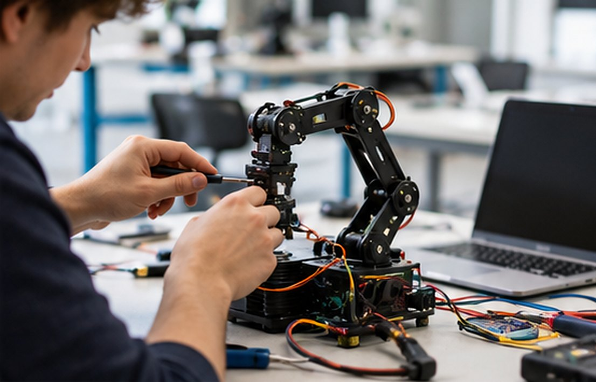
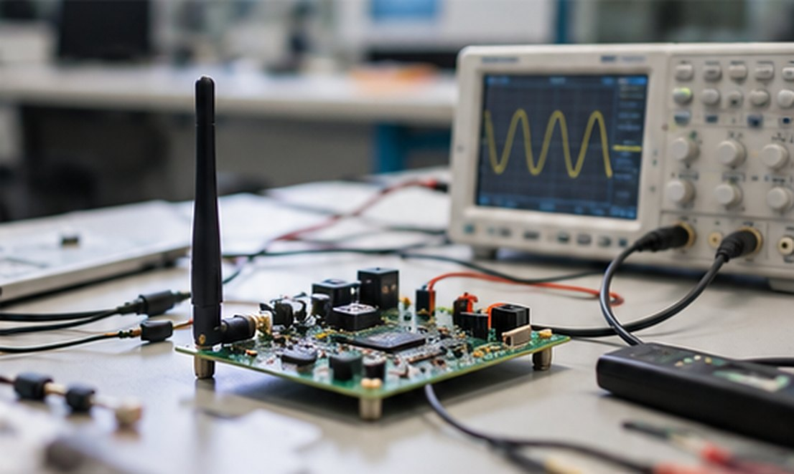
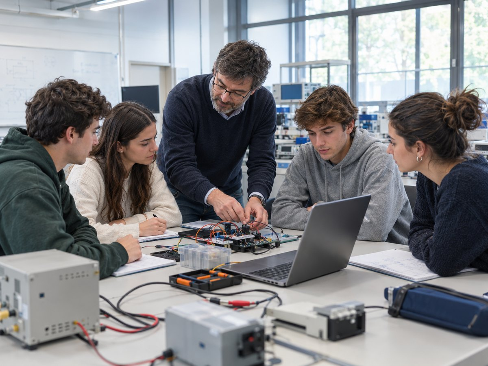
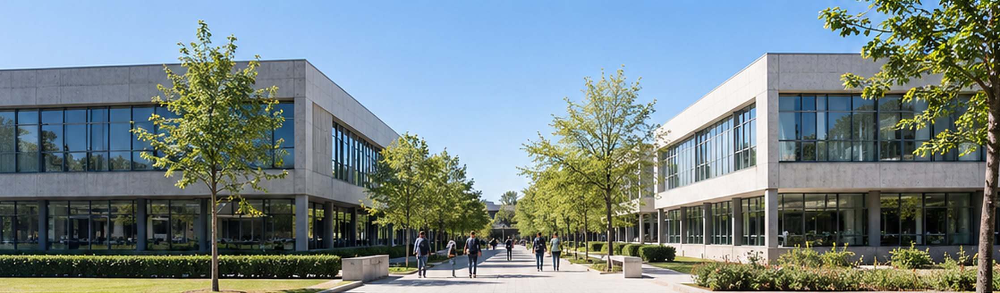
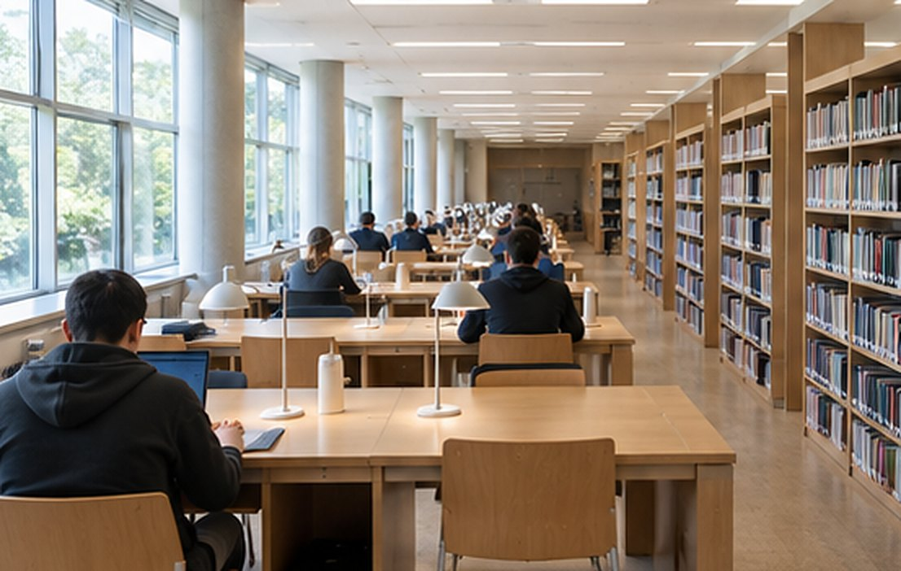

Ingeniería para construir sistemas útilesMachina ex mente · La máquina nace de la mente
Formamos ingenieros e ingenieras en robótica, inteligencia artificial, informática y telecomunicación, con enseñanza práctica, grupos reducidos y relación estrecha con empresas y centros de investigación.
Tres grados de ingeniería
Escuela Politécnica Superior. Docencia presencial en español. El primer curso es común a los tres grados.

Ingeniería Robótica e Inteligencia Artificial
240 ECTS · 40 plazas
- Sistemas de Control
- Aprendizaje Automático
- Visión por Computador
- Software para Robótica (ROS)
Ingeniería Informática
240 ECTS · 40 plazas
- Bases de Datos
- Sistemas Operativos
- Seguridad Informática
- Computación en la Nube

Ingeniería de Telecomunicación
240 ECTS · 40 plazas
- Comunicaciones Digitales
- Antenas y Propagación
- Comunicaciones Móviles
- IoT y Redes de Sensores
Carácter de los títulos. Los grados de la UTQ son títulos propios, sin carácter oficial. El Grado en Ingeniería de Telecomunicación no habilita para el ejercicio de la profesión regulada de Ingeniero Técnico de Telecomunicación.
Cómo se estudia en la UTQ
Una universidad pequeña, exigente y práctica.
- Grupos de 40 estudiantesUn grupo por curso y grado, con trato personal entre profesorado y estudiantes.
- Laboratorios desde el primer semestreProgramación, física y fundamentos de computadores, en los laboratorios del Edificio Telekino.
- Tutorías de lunes a juevesDe 17:00 a 18:00, con cita por el campus virtual.
- Prácticas externas y Trabajo de Fin de Grado24 ECTS en cuarto curso, en relación con empresas y centros de investigación.

Admisión para 2026-2027
Dos semanas, desde la preinscripción hasta el primer día de clase.
- 22 – 26 de octubrePreinscripción
- 27 – 28 de octubrePrueba de matemáticas y entrevistas
- 29 de octubrePublicación de la lista de admitidos
- 29 de octubre – 6 de noviembreMatrícula
- 30 de octubreJornada de bienvenida
- 3 de noviembreInicio de clases
Agenda del curso
Fechas del calendario académico 2026-2027.
- 30octubre de 2026Jornada de bienvenidaEdificio Torres Quevedo, salón de actos
- 3noviembre de 2026Inicio de clasesPrimer semestre, hasta el 19 de febrero
- 16al 20 de noviembre de 2026Elecciones de delegadosDelegado y subdelegado de cada grupo
- 13mayo de 2027Sesión ordinaria del ClaustroÓrgano consultivo de la universidad
Una universidad pequeña, exigente y práctica
La Universidad Torres Quevedo se funda el 21 de octubre de 2026 para dedicarse a las tecnologías que están transformando la industria y la sociedad.
Su nombre rinde homenaje a Leonardo Torres Quevedo (1852-1936), ingeniero e inventor del ajedrecista automático y del Telekino, pionero de la automática y del control a distancia.
Aspiramos a ser, en 2036, una universidad de referencia en España en robótica, inteligencia artificial y comunicaciones. La primera promoción se graduará en 2030.
- RigorLas decisiones técnicas se basan en el cálculo, la prueba y la evidencia.
- IngenioSe fomenta la creatividad para resolver problemas de forma nueva.
- ResponsabilidadLa tecnología se diseña pensando en su impacto ético, social y ambiental.
- ColaboraciónSe trabaja en equipo, entre disciplinas y con empresas.
- CercaníaEl tamaño reducido permite un trato personal entre profesorado y estudiantes.
Equipo de gobierno
Órganos unipersonales de la universidad.
Campus de Tres Cantos
Avenida de la Ingeniería, 1228760 Tres Cantos (Madrid)
Edificio A · Torres Quevedo
Rectorado, Secretaría de Estudiantes, servicios, biblioteca, sala de estudio y salón de actos.
Edificio B · Telekino
Seis aulas de 40 plazas y tres laboratorios: informática, electrónica y telecomunicación, y robótica.

